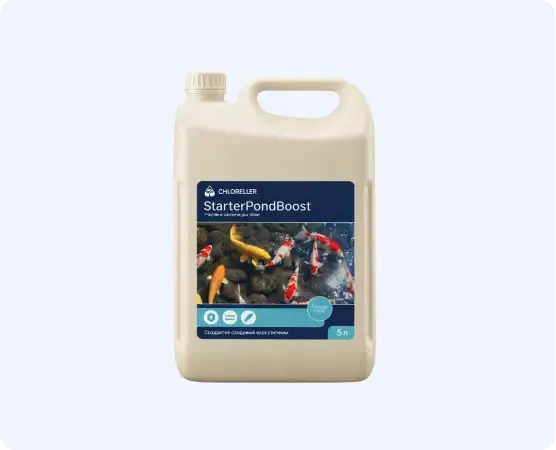

Биопрепараты
Старт. бактерии StarterPondBoost, 5л, для пруда до 150000л
Цена и наличие
- 1 шт.148 BYN / шт.В наличии
Данные на 23.11.2026.
Характеристики
- Размер емкости
- 5 л
- Для прудов макс. объемом воды
- до 150000 л
- Назначение
- комплекс нитрифицирующих бактерий
- Основа препарата
- комплекс нитрифицирующих бактерий
- Страна
- РБ
Описание
Мощный биопрепарат с живыми бактериями (1 млрд КОЕ/см³) для очистки воды и здоровья рыб. Устраняет аммиак, нитриты и борется с цветением воды.
Применение и дозировка
Стартовые бактерии для пруда StarterPondBoost, 5л, на пруд объемом до 150 м³ Мощный биопрепарат с живыми бактериями (1 млрд КОЕ/см³) для очистки воды и здоровья рыб. Устраняет аммиак, нитриты и борется с цветением воды. Применение и дозировка Одна канистра 5 литров рассчитана на пруд объемом до 150 м³. Для запуска пруда (май): Равномерно распределите препарат по поверхности воды из расчета 5 л на 150 м³. Для поддержания баланса (июнь-август): Вносите профилактическую дозу ежемесячно (примерно 1/5 канистры на 150 м³). При цветении воды: Вносите препарат при температуре воды выше +21°С. При низкой прозрачности (менее 1 м) дозировку рекомендуется удвоить. Перед применением необходимо проконсультироваться со специалистом.
Преимущества
Преимущества: Безопасен для рыб, растений и людей (4 класс опасности). Подавляет патогенную микрофлору и неприятные запахи. Ускоряет биологическую фильтрацию. Важно: Хранение: 18 месяцев при +4°…+15°С или 12 месяцев при комнатной температуре. Беречь от прямых солнечных лучей. Особенности: В начале работы препарата возможно временное увеличение органики в воде – это нормальный процесс очистки. Возможное снижение эффективности при неправильных условиях (например, низкая температура или неправильный pH).